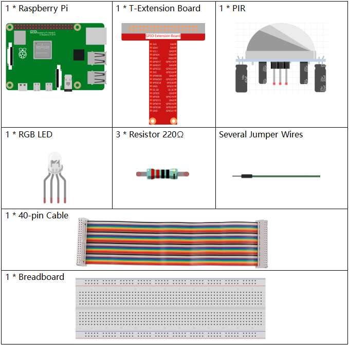

Note
Bonjour et bienvenue dans la communauté SunFounder Raspberry Pi, Arduino et ESP32 sur Facebook ! Plongez plus profondément dans l’univers du Raspberry Pi, Arduino et ESP32 avec d’autres passionnés.
Pourquoi nous rejoindre ?
Support d’experts : Résolvez les problèmes post-achat et les défis techniques avec l’aide de notre communauté et de notre équipe.
Apprendre & Partager : Échangez des conseils et des tutoriels pour améliorer vos compétences.
Aperçus exclusifs : Bénéficiez d’un accès anticipé aux annonces de nouveaux produits et aux avant-premières.
Réductions spéciales : Profitez de remises exclusives sur nos derniers produits.
Promotions festives et cadeaux : Participez à des concours et promotions spéciales.
👉 Prêt à explorer et créer avec nous ? Cliquez sur [Ici] et rejoignez-nous dès aujourd’hui !
2.2.4 PIR
Introduction
Dans ce projet, nous allons créer un dispositif en utilisant des capteurs infrarouges pyroelectriques détectant le corps humain. Lorsque quelqu’un s’approche de la LED, celle-ci s’allume automatiquement. Sinon, la lumière s’éteint. Ce capteur de mouvement infrarouge est capable de détecter les infrarouges émis par les humains et les animaux.
Composants
Schéma de câblage

Procédures expérimentales
Étape 1 : Montez le circuit.

Étape 2 : Accédez au répertoire du code.
cd ~/davinci-kit-for-raspberry-pi/nodejs/
Étape 3 : Exécutez le code.
sudo node pir.js
Une fois le programme lancé, le capteur PIR détecte les alentours et allume la LED RGB en jaune s’il détecte une présence à proximité. Le module PIR est équipé de deux potentiomètres : l’un pour ajuster la sensibilité et l’autre pour régler la distance de détection. Pour améliorer les performances du module PIR, ajustez ces deux potentiomètres selon vos besoins.
Code
const Gpio = require('pigpio').Gpio;
const pirPin = new Gpio(17, {
mode: Gpio.INPUT,
pullUpDown: Gpio.PUD_DOWN,
edge: Gpio.EITHER_EDGE
}) // the pir connect to pin17
const redPin = new Gpio(18, { mode: Gpio.OUTPUT, })
const greenPin = new Gpio(27, { mode: Gpio.OUTPUT, })
const bluePin = new Gpio(22, { mode: Gpio.OUTPUT, })
//'Red':18, 'Green':27, 'Blue':22
var p_R, p_G, p_B
// Set all led as pwm channel and frequece to 2KHz
p_R = redPin.pwmFrequency(2000)
p_G = greenPin.pwmFrequency(2000)
p_B = bluePin.pwmFrequency(2000)
// Set all begin with value 0
p_R.pwmWrite(0)
p_G.pwmWrite(0)
p_B.pwmWrite(0)
// Define a MAP function for mapping values. Like from 0~255 to 0~100
function MAP(x, in_min, in_max, out_min, out_max) {
return (x - in_min) * (out_max - out_min) / (in_max - in_min) + out_min
}
// Define a function to set up colors
function setColor(color) {
// configures the three LEDs' luminance with the inputted color value .
// Devide colors from 'color' veriable
R_val = (color & 0xFF0000) >> 16
G_val = (color & 0x00FF00) >> 8
B_val = (color & 0x0000FF) >> 0
// Map color value from 0~255 to 0~100
R_val = MAP(R_val, 0, 255, 0, 100)
G_val = MAP(G_val, 0, 255, 0, 100)
B_val = MAP(B_val, 0, 255, 0, 100)
//Assign the mapped duty cycle value to the corresponding PWM channel to change the luminance.
p_R.pwmWrite(R_val)
p_G.pwmWrite(G_val)
p_B.pwmWrite(B_val)
//print ("color_msg: R_val = %s, G_val = %s, B_val = %s"%(R_val, G_val, B_val))
}
pirPin.on('interrupt', (level) => {
if (level) {
setColor(0xFFFF00)
}else{
setColor(0x0000FF)
}
});
process.on('SIGINT', function () {
p_R.pwmWrite(0)
p_G.pwmWrite(0)
p_B.pwmWrite(0)
process.exit();
})
Explication du code
Le code de cet exemple combine des concepts des sections 2.1.1 Button et 1.1.2 RGB LED, donc il n’est pas nécessaire de rentrer dans les détails.
Image du phénomène